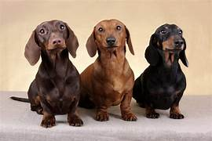

El dachshund, también conocido como perro salchicha o teckel es una raza de perro originada en Alemania. Su peculiar fisonomía se debe a una mutación genética conocida como bassetismo que hace que las patas sean desproporcionalmente cortas en relación con el resto del cuerpo.
El dachshund de tamaño estándar se desarrolló para oler, perseguir y ahuyentar a los tejones (de ahí su nombre, que en alemán significa 'perro tejonero') y otros animales que viven en madrigueras, mientras que el dachshund en miniatura fue criado para cazar animales pequeños como conejos y ratones.
| Dueño | Descripción Dueño | Dachshund | Descripción Dachshund |
|---|---|---|---|
| John F. Kennedy | Presidente #35 de los Estados Unidos | Dunker | Nunca salió de Alemania. Lo tuvo durante su tour en Europa cuando estaba con su novia de ese entonces Olivia. Kennedy resultó alérgico a Dunker |
| Grover Cleveland | Presidente #22 y #24 de los Estados Unidos | Desconocido | Vivió en la casa blanca durante ambos periodos presidenciales. |